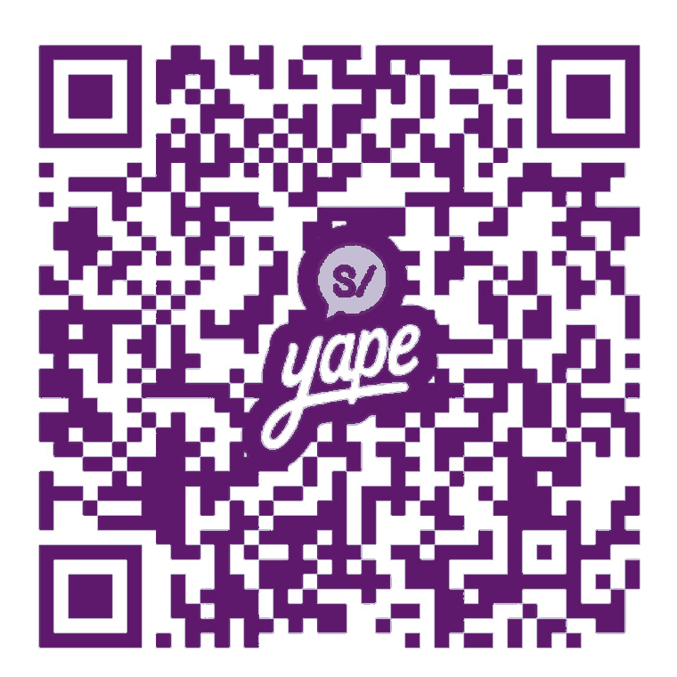

Everything below is something I actually used to get from "I want to build a robot that walks" to writing controllers at a legged robotics lab. Short list, no padding. Courses, simulators, the papers that matter, and open hardware you can afford.
Every paper in this workspace has an audio version: a plain-language walkthrough of the idea behind it, generated with NotebookLM. Open it, pick one, listen on the bus.
He creado el siguiente NotebookLM, donde en el lado izquierdo puedes encontrar los recursos que se han convertido a formato de audio. Cada paper que está dentro de este espacio de trabajo ha sido llevado a una versión sencilla, para que puedas entender el concepto que hay detrás.
La idea es que escuches uno de estos cada día, y que poco a poco vayas entendiendo las cosas nuevas que se están haciendo en la industria de la robótica, en distintos ámbitos. Buena suerte en robotics.
Four shelves, in the order I'd work through them. Each link is free unless marked otherwise.
A one-to-one call, in Spanish, about where you are and what to do next. Bring your CV, your project or your applications. I have done the scholarship, the lab application and the hardware from Lima, and I will tell you what actually moved the needle.

Escanea desde tu app de Yape y escribe el monto.
Manda la captura al correo y agendamos.
Desde un banco de EE. UU., transferencia nacional ACH o wire. Desde cualquier otro país, transferencia SWIFT.
¿No tienes el dinero porque todavía eres pequeño?
Te recomiendo ver algunas opciones de financiamiento dentro de tu familia, familiares o entorno cercano. Y mientras tanto: todo lo demás de esta página, los recursos y el audio, es gratis y siempre lo va a ser.
¿Eres una organización o una fundación?
Si te gustaría contactar conmigo para dar una charla a tus becarios o alumnos, es completamente gratuito. Escribe a angor.root@gmail.com.